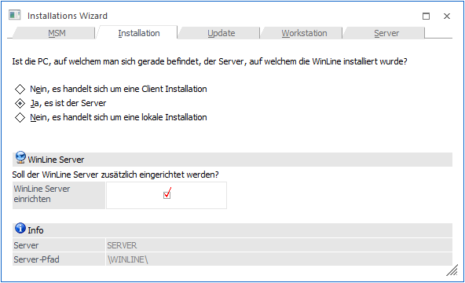
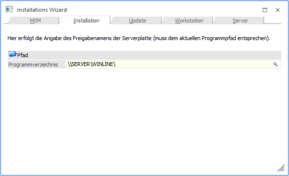
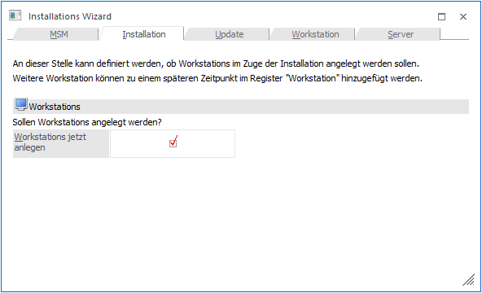
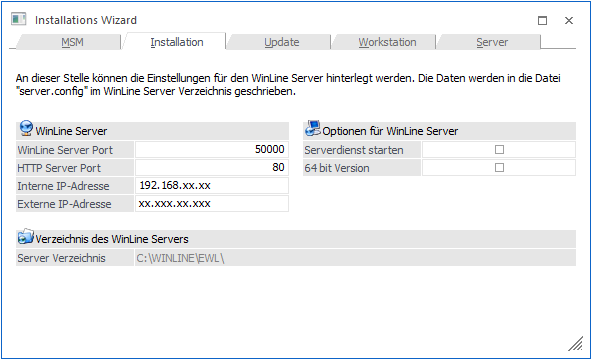
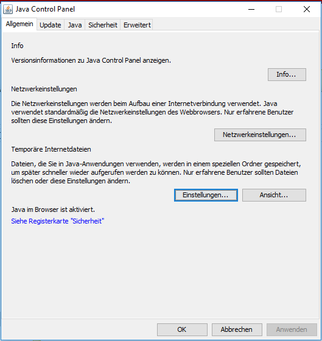
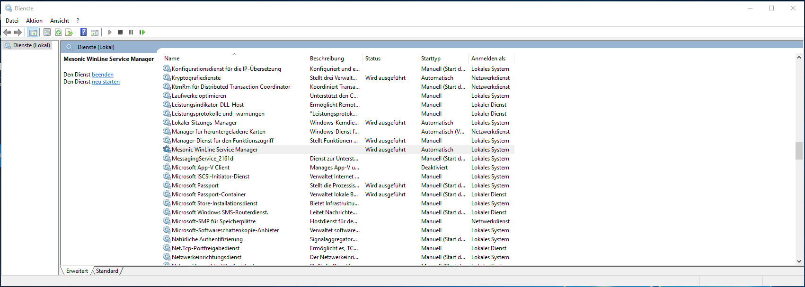
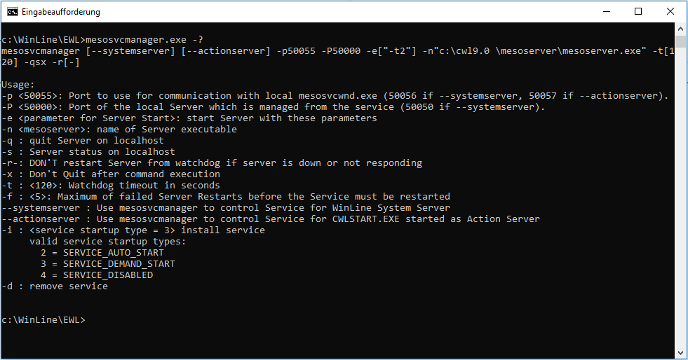
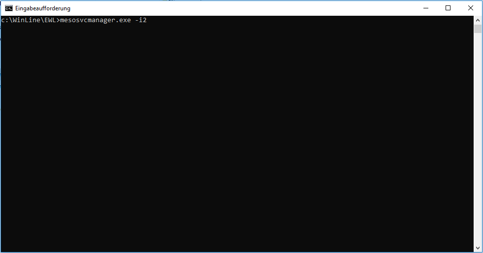
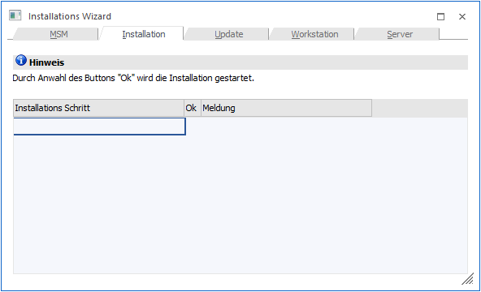
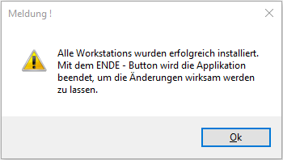

Wird im Zuge des Installationswizards (MSM/InstallationsWizard) die Option "Ja, es ist der Server" gewählt, besteht die Möglichkeit den eigentlichen WinLine Server einzurichten.
Hinweis:
Um in weiterer Folge über diesem Wizard auch den WinLine-Server Dienst starten zu können, muss der WinLine ADMIN "als Administrator" ausgeführt werden.

 Durch
Anklicken des VOR-Buttons kann die nächste Eingabe bearbeitet werden.
Durch
Anklicken des VOR-Buttons kann die nächste Eingabe bearbeitet werden.
Durch Drücken der ESC-Taste wird das Fenster geschlossen.
Im nächsten Fenster muss die Freigabe (Programmverzeichnis) eingegeben werden, auf der die WinLine am Server installiert wurde.

Im Feld
Ø Programmverzeichnis
wird der Name des Computers und die Freigabe eingegeben, auf dem das Programm installiert wurde. Hier muss darauf geachtet werden, dass die Eingaben korrekt sind. Ist dies nicht der Fall, wird eine entsprechende Fehlermeldung ausgegeben. Standardmäßig werden der aktuelle Rechnername und die Freigabe vorgeschlagen.
Durch Drücker der F9-Taste kann nach allen Freigaben am Server gesucht werden.
Wurden alle Eingaben durchgeführt,
kann durch Anklicken des VOR-Buttons auf die nächste Seite gewechselt
werden.
Durch Anklicken des ZURÜCK-Buttons kann noch einmal die Art der Installation gewählt werden.
Im nächsten Fenster kann festgelegt werden, ob auch weitere Workstations angelegt werden sollen. Bei der Installation vom Server muss diese Option nicht gemacht werden, da die Workstations jederzeit nachträglich angelegt werden können.

Hinweis
Sollten in weiterer Folge mehrere WinLine-Server eingesetzt werden (WinLine-System Server / WinLine Server), so müssen diese Workstations als WinLine-Client (Client/Server-Client oder Zentraler Client) angelegt werden.
Durch
Anklicken des VOR-Buttons können Workstations angelegt werden.
Durch Anklicken des Zurück-Buttons können Sie nochmals die Freigabe bzw. den Installationspfad des Servers bearbeiten.
Die genaue Vorgehensweise zur Installation der Workstations finden Sie im Handbuch zur Administration der WinLine im Kapitel "Installation vom Server aus".
Durch
Anklicken des VOR-Buttons gelangt man in das nächste Fenster, wo die
Einstellungen für den WinLine Server vorgenommen werden können.
Durch Anklicken des ZURÜCK-Buttons könne die vorherigen Eingaben überarbeitet werden.

Ø WinLine Server Port
Der WinLine Server Port wird programmtechnisch vom Java-Client (Java Applet) verwendet, um auf den EWLServer zugreifen zu können.
Ø HTTP Server Port
Dieser Port wird dazu verwendet, die EWL über einen Browser (z.B.: Internet-Explorer) anzusurfen. Der EWL Server wird über den HTTP Server Port angesurft um eine nicht vorhandene bzw. eine neuere/aktuelle Java-Client-Version herunterladen zu können bzw. das Login zu verifizieren. Ab diesem Zeitpunkt kommuniziert der Java-Client über ein WinLine-internes Protokoll mit dem EWL-Server (über den eingegebenen WinLine Server Port).
Als HTTP Port wird der Port 80 vorgeschlagen und kann, falls auf dem Rechner nicht schon ein anderer Web-Server (wie z.B.: der IIS, Microsoft Internet Information Service) läuft, weiterverwendet werden.
Vorteil von Port 80
Beim Ansurfen des Servers braucht man nur die IP Adresse oder den Servernamen einzugeben (z.B. http://192.168.0.1/ oder http://WinLineewl/). Es ist also nicht nötig den Port dazu anzugeben (Beispiel: http://192.168.0.1:80/)
Ø Interne IP-Adresse / Externe IP-Adresse
Hier sind jene Adressen anzugeben, über die der Aufruf des WinLine-Servers von intern bzw. von extern erfolgen soll.
Hinweis:
Die üblich intern verwendeten IP-Adressen befinden sich im Bereich 192.168.xxx.xxx (abgesehen von weiteren Bereichen die als lokale Adressen definiert sind). Diese Adresse kann also in einem internen Netzwerk (LAN) genutzt werden. Dabei ist es nicht möglich den Server extern (z.B. vom Internet Cafe aus) mit dieser Adresse ansurfen zu können. Die EWL "betrachtet" auch IP-Adressen im Bereich 192.*.*.* als lokale (Intranet) Adressen.
Ø Serverdienst starten
Durch Anwählen dieser Option wird ein Dienst (Mesonic EWL Service Manager über die Datei mesosvcmanager.exe) mit dem lokalen System Account installiert. Wenn die WinLine-Server Einrichtung abgeschlossen ist, wird dieser Dienst automatisch gestartet.
Ø 64 bit Version
Wenn eine entsprechende "Enterprise connect/64 BIT-Server"-Lizenz vorhanden ist, kann diese Option aktiviert werden. Hierbei werden die 64 bit Dateien aus dem Verzeichnis "Bin64" in das EWL-Hauptverzeichnis kopiert.
Webapplet
Der WinLine Server wird signiert, damit man vom Java-Applet aus auf die Festplatte zugreifen kann. Der Festplattenzugriff wird z.B. für das Up- und Download benötigt.
Beim Login kann der Benutzername und die SessionsID mit der Checkbox "Anmeldung speichern" im Cookie gespeichert werden. In der EWL direkt gibt es in weiterer Folge die Möglichkeit (Button neben dem Audit-Ampelsymbol) die lokal gespeicherten Daten wie z.B. automatischer Login zu löschen.
Wo die temporären Internet Dateien gespeichert werden sollen bzw. die Größe des Festplattenspeichers für temporäre Dateien kann in den Java Einstellungen (im Windows z.B. unter Systemsteuerung -> Java) eingestellt werden.


Der "Mesonic WinLine Service Manager" läuft im Hintergrund und überprüft regelmäßig, ob der WinLine-Server noch läuft und startet ihn, falls das nicht der Fall ist.
Der Service kann, falls der WinLine-Server z.B. auf einen anderen Pfad gelegt werden soll, ggfs. manuell installiert bzw. deinstalliert werden:
ü Die Installation erfolgt über den Parameter mesosvcmanager.exe -i
ü Die Deinstallation kann über mesosvcmanager.exe -d durchgeführt werden.
ü Über mesosvcmanager.exe -? werden alle verfügbaren Parameter angezeigt.

Die Eingaben müssen unter Windows in der "Eingabeaufforderung" (cmd.exe - je nach Betriebssystem unterschiedlich aufzurufen) ausgeführt werden. (idealerweise als Administrator)

Mit dem Befehl "mesosvcmanager –i2" wird beispielsweise der Serverdienst installiert und gestartet.
Hinweis
Alle Einstellungen werden in die Datei "server.config" in das EWL-Verzeichnis geschrieben und können nachträglich über den Menüpunkt "MSM/WinLine Server" geändert werden.
Im nächsten Schritt wird die Installation bestätigt.

Durch Drücken des "OK"-Buttons wird mit dem Einrichten des Servers begonnen.

Bei erfolgreichem Abschluss der Installation erscheint eine entsprechende Meldung und die Admin Applikation wird geschlossen.